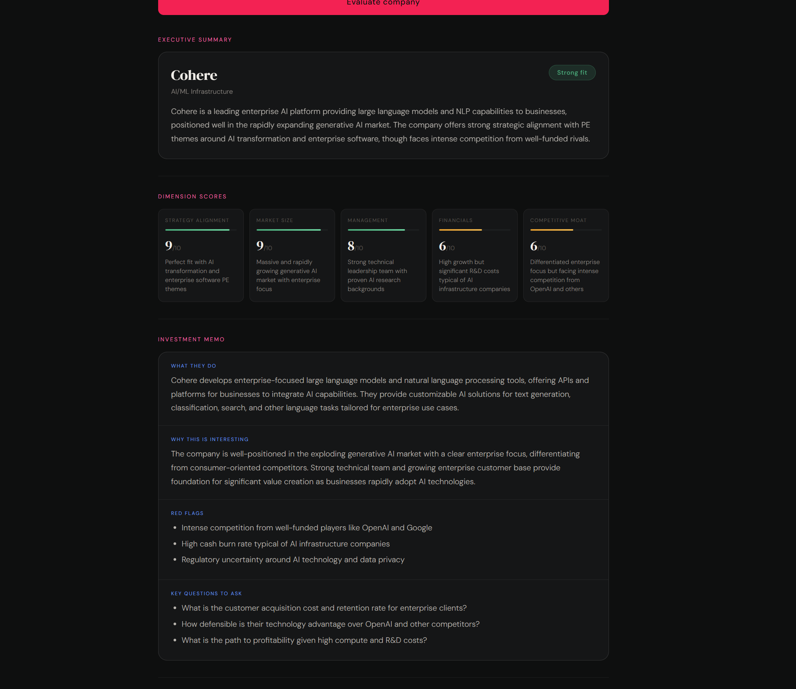
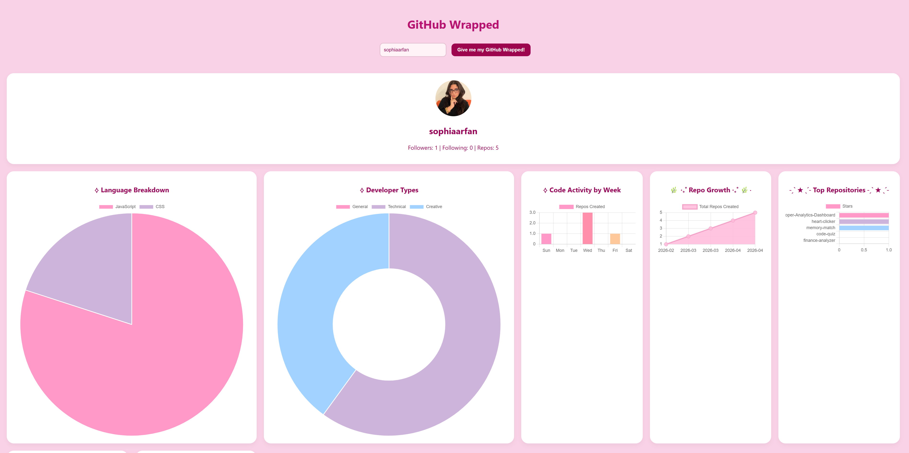
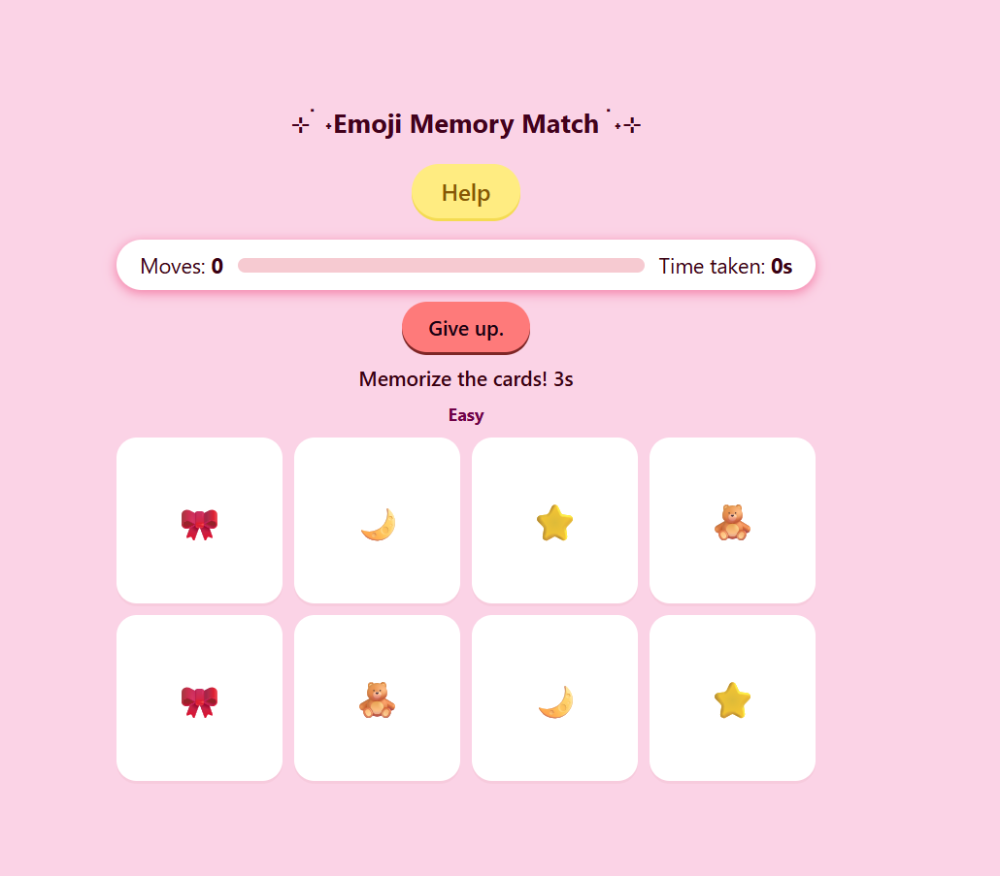
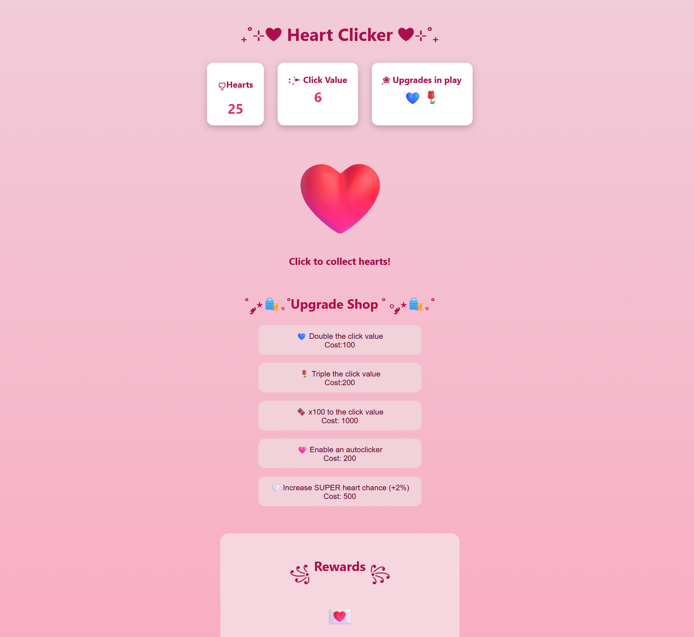
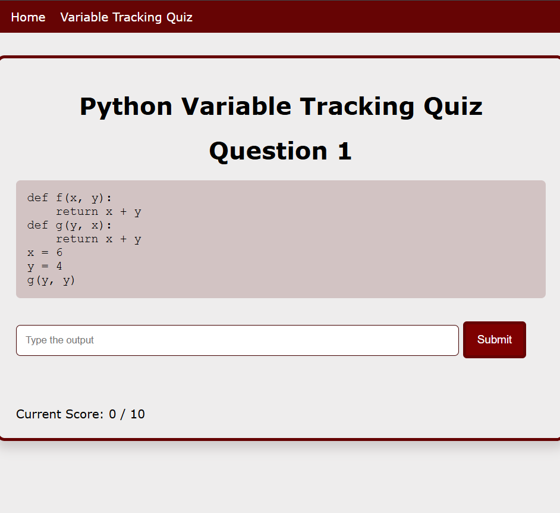

A web app that screens companies for investment fit using the Anthropic API and web search. Enter a company name, pick a strategy, and get a scored investment memo complete with red flags, key questions, and one-click PDF export

A Spotify Wrapped-style dashboard for your GitHub. Pulls repo and commit data through the GitHub REST API and turns it into visual stats: language breakdown, coding patterns, productivity trends, & with AI-generated developer archetypes via the Anthropic API.

A browser-based memory card game with three difficulty levels, a live timer, a penalty system for wrong flips, and personal best tracking. Built entirely with vanilla HTML, CSS, and JavaScript

An idle clicker game with a scaling upgrade shop, autoclicker, Super Heart mechanic, and milestone badge rewards. Built with vanilla HTML, CSS, and JavaScript.

An interactive Python quiz that dynamically generates code snippets, challenging users to trace variable state and expression output. Helps users practice reading and understanding code without executing it, simulating a common first-year university courses' coding question format.